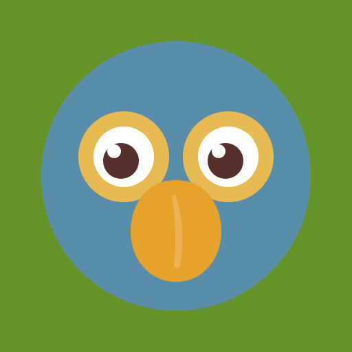

- Cara
- —
- Alas
- —
- Luces
- —
Todavía no hay respuesta de la placa

Panel de control
Todavía no hay respuesta de la placa
Cada botón encadena cara, movimiento y luces. Corren en este navegador y no en la placa: si se corta la conexión se cortan solas, que es lo que hay que querer cuando algo se mueve. Cualquier botón corta la secuencia anterior; la parada también.
Gira la cara y mueve la luz al ala contraria. «Centrar» lo devuelve al frente según la cuenta del panel: si el motor quedó torcido, se endereza a mano.
La voz la pone el traductor de Google y sale por el teléfono del robot, que es donde está la cara y donde el pico se mueve con lo que suena. Las lenguas originarias no están en Google: escritas como suenan y leídas con la voz en español quedan más cerca que con cualquier otra. Sin internet, Piko cae a la voz del propio teléfono.
Tocá una frase y Piko la dice. Las que guardás se borran con la ×.
Un solo motor mueve las alas y el cuerpo: van siempre juntos, como una sola pieza.
Aletea mientras el dedo siga apretando. Al soltarlo, las alas bajan solas.
Las dos alas a la vez
Efectos
Los dos módulos, no luz por luz. Arrancan en blanco.
Buscando…
La cara se abre en /cara desde el teléfono del robot.
Buscando…
Suenan en el teléfono del robot, que es donde está la cara.
sin ejercicio
La palabra aparece en la pantalla del robot y Piko dice la consigna. Quién acertó y quién no lo decide el maestro con las dos teclas de arriba: el robot todavía no escucha, y esta simulación es para ver el ejercicio entero antes de que lo haga.
4096 medios pasos es una vuelta entera; 1024 es un cuarto. Arriba de 15 rpm zumba en vez de girar, y con el teléfono montado conviene ir más despacio: un motor a pasos tiene más fuerza cuanto más lento va.